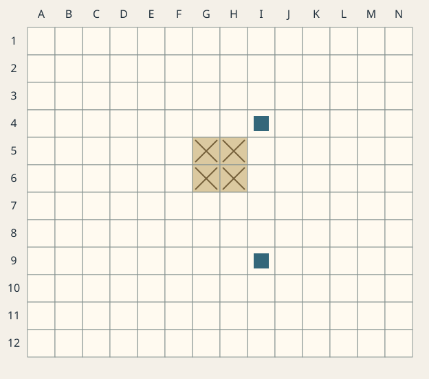

Одинаковые правила, разная история
Все карты совпадают с сеткой нативного пакета: 14 × 12, клетка — 5 футов. G5/H5/G6/H6 — трудная местность; I4/I9 — половинное укрытие. Остальные детали описания декоративны, пока ведущий не изменил поле штатно.
Расстановка и параметры
Начальные клетки героев: B3, B4, B5, B6, C3, C4, C5, C6; штатная подготовленная встреча назначает их присутствующим героям по именам. Противники: L3, L4, L5, L6, M3, M4. Используйте только нужное число фигур. Перед началом герои должны находиться в месте встречи.
Для 3 / 4 / 5 / 6 / 7 / 8 игроков: 2 / 3 / 3 / 4 / 5 / 6 противников, здоровье каждого 12 / 14 / 16 / 18 / 20 / 22. Защита 12; скорость 20 футов; одна ближняя атака +3, 1d4+1 дробящего урона, досягаемость 5 футов.
Враги — простая поддерживаемая модель. Мирные решения и ограничения сцены описаны отдельно; ведущий подтверждает их результат. После первого раунда напомните пути переговоров или отступления. Встречи не запускаются автоматически.
Чужие руки на тележке
Только если группа сама пытается силой унести конверт Тамары либо после предупреждения отказывается пропустить нанятых Глебом сопровождающих; ведущий предлагает разговор и отход до инициативы.
Цель и выходы
Разорвать окружение и выйти на общую площадку, сохранив людей в безопасности. Победа не передаёт собственности на 500; деньги возвращаются лишь после отдельного согласия Тамары. Поражение означает отступление, а не обязательный захват героев.
Предложить Тамаре сохранить конверт у себя и назначить общий разговор о возврате. Сопровождающим можно показать, что переноса денег пока не будет; они отходят без броска. Свободный проход к улице остаётся видимым.
Поведение противников
Взрослый старше 21 года в плотной рабочей куртке; действует обычной палкой, которую игровой лист обозначает посохом.
Сопровождающие стараются оттеснить героев от будки и прекращают сопротивление, если Тамара отзывает разрешение на их присутствие. Намерение нелетальное; противники принимают сдачу и не преследуют отступивших за площадку.
Размер группы
Для 3/4/5/6/7/8 героев: 2/3/3/4/5/6 противников, каждый с 12/14/16/18/20/22 ОЗ соответственно, КД 12, одна ближняя атака +3 на 1d4+1. При 3–5 игроках один общий план; при 6–8 распределите сопровождение и переговоры до инициативы. Новых автоматических правил нет.


Сетка 14×12, клетка — 5 футов. Трудная местность только в G5, H5, G6, H6 (четыре клетки): мокрые свёрнутые брезенты. Половинное укрытие в I4 и I9: тележки. Будка у северного края служит фоном, широкий выход на улицу находится на юге. Оба боковых прохода свободны для отступления. Выходы и прочие детали задаёт ведущий в описании; на нативном поле дополнительных препятствий нет.
У порога печатни
Необязательная сцена возникает, если герои после открытого спора с Глебом решают силой пересечь поставленную его сопровождающими преграду. Сам заказ и обёртку Иосиф может передать через окно без боя.
Цель и выходы
Вывести желающих уйти взрослых работников в общий проход или выйти самим. Нельзя считать победу разрешением забрать деньги печатника; цель — свободный выход, а не наказание несогласных.
Попросить Иосифа лично объявить, кто имеет право находиться в его мастерской; он может предложить встречу на улице. Либо принять документы через окно и уйти, оставив деньги в конверте. Отказ от стычки сохраняет все существенные улики.
Поведение противников
Взрослый старше 21 года в одинаковом плаще без знаков службы, оплаченный стоять у двери; оружейный профиль — обычная палка.
Сторожа закрывают проход телами, но не трогают печатный станок и не атакуют лежащих. После выхода работников или отзыва заказа прекращают бой. Сдача позволяет немедленно отойти к окну и продолжить разговор.
Размер группы
Для 3/4/5/6/7/8 героев соответственно 2/3/3/4/5/6 противников с 12/14/16/18/20/22 ОЗ, КД 12, одной ближней атакой +3 на 1d4+1. Большая группа может распределить выход и разговор; три героя используют один свободный проход, не обязаны удерживать несколько точек.

Сетка 14×12, клетка — 5 футов. Трудная местность только в G5, H5, G6, H6 (четыре клетки): стопки пустой бумаги. Половинное укрытие в I4 и I9: низкие наборные шкафы. Станок находится за пределами схемы и не служит опасной ловушкой. Окно выдачи и широкий боковой выход доступны. Выходы и прочие детали задаёт ведущий в описании; на нативном поле дополнительных препятствий нет.
Вкладыш у ворот
В финале Глеб может объявить намерение лично унести свой вкладыш через видимые ворота. Стычка начинается лишь если герои сознательно блокируют его сопровождающих после предложения переговоров; она не возникает автоматически от найденной улики.
Цель и выходы
Остановить перенос 1000 на время разговора или безопасно отступить, сохранив доказательства. Получение вкладыша требует разыгранной передачи, сдачи либо доступного действия по обычным правилам; один выигранный бросок не означает возврат всей кассы.
Предложить пересчитать вкладыш при свидетелях и отнести его в Дом артели с письменным указанием, что это возврат чужих денег. Глеб может согласиться ради сохранения лица. Можно также пропустить его и завершить историю частичным возвратом; остальные 800 не исчезают от его ухода.
Поведение противников
Взрослый старше 21 года, нанятый для переноски; защищает проход обычной палкой, без огнестрельного оружия и специальных приёмов.
Сопровождающие пытаются вывести заказчика, а не причинить смертельный вред. При явной сдаче Глеба либо добровольной передаче вкладыша отходят; не преследуют героев вне мола. Не знают тайных исходов других адресов.
Размер группы
Для 3/4/5/6/7/8 героев: 2/3/3/4/5/6 противников с 12/14/16/18/20/22 ОЗ, КД 12, одной ближней атакой +3 на 1d4+1. При трёх игроках переговоры и сопровождение идут последовательно; при шести–восьми чередуйте пары, не добавляя скрытых раундов или таймеров.

Сетка 14×12, клетка — 5 футов. Трудная местность только в G5, H5, G6, H6 (четыре клетки): сложенные пустые мешки. Половинное укрытие в I4 и I9: низкие ящики. Северная сетчатая секция и южные ворота видны одновременно. Вдоль краёв свободны проходы для добровольного ухода. Выходы и прочие детали задаёт ведущий в описании; на нативном поле дополнительных препятствий нет.